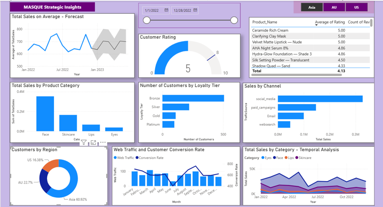
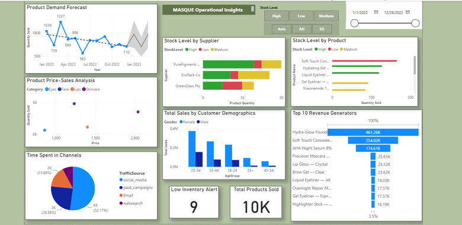

Overview
In this project, I created a Power BI dashboard to visualise the modern analytics platform for a makeup brand, which showcases various insights for both the analytical and business audiences.
How business and data storytelling blend to create an end product is exciting.
Approach
The steps taken to build this dashboard:
- Identifying the business problem.
- Listing the stakeholders.
- Creating user personas and identifying the needs of the stakeholders.
- Making user stories.
- Understanding the dataset.
- Listing the measures that address the user stories.
- Preparing the Power BI dashboard.
Dashboard Overview
This project consists of two main dashboard views: strategic and operational. The goal was to extract the stories from the dataset that address the user stories and present them through an interactive and visually appealing dashboard.
The dashboards cover various angles, including web traffic of marketing campaigns and conversion trends, sales forecasts, temporal analysis of sales, time spent on each marketing channel, average sales statistics, and customer rating trends.
This showcases my ability to extract meaningful insights from data related to makeup brand research, marketing campaigns and sales. I designed user-friendly, dynamic dashboards that blend insightful data with a touch of fun.
Interactive Dashboard
Strategic Dashboard

Key Insights
Strategic Dashboard Insights
Sales Performance
- Face products dominate sales (~0.35M+), significantly outperforming Skincare, Lips, and Eyes categories.
- Sales exhibit volatility, with peaks around mid-2022, followed by a decline in 2023.
- Average customer rating is solid at 5, with premium products (Ceramide creams, clay masks, velvet lipstick) hitting the perfect scores.
Customer Acquisition & Channels
- Social media is a clear winner that should be invested in for the future, driving over 0.3 million in sales compared to other channels.
- Sales generated from social media are nearly double those from other methods, indicating a significant risk of channel concentration.
Customer Loyalty
- Most customers are Bronze tier (~500), while Gold and Platinum customers are low in numbers, close to 100.
- This indicates poor customer retention or insufficient incentives for repeat purchases, which the business must monitor.
Geographic Distribution
- Asia dominates with 60.4% of customers, which indicates a strong customer base in the Asian market.
Operational Dashboard

Operational Dashboard Insights
Inventory Management
- There are 9 products on low inventory alert, which is significant given the total of 10K products sold.
Demand & Sales Patterns
- There's a dramatic spike in March 2022, but the sales kept declining through late 2022. The forecast for January 2023 shows a predicted increase in sales considering the seasonal patterns.
Supply Chain & Stock Management
- PurePigments has predominantly high stock levels (green), while GreenGlass Pty shows concerning red/yellow stock levels.
Customer Demographics
- Sales are heavily skewed toward female customers, with the 25-34 age group being the largest segment. The age group 35-44 is also significant, suggesting the brand resonates with millennials and Gen X.
Market Channel Effectiveness
- Social media dominates with 52.17% of time spent, followed by paid campaigns 24.38%. The web search presence 15.69% and email methods provide opportunities to optimise these underutilised channels.
Strategic Recommendations
- Diversify revenue streams beyond the top 3 products.
- Investigate GreenGlass Pty's supply issues or consider alternative suppliers.
- Leverage the strong 25-44 female demographic in marketing campaigns.
- Optimise underperforming channels such as email and organic search.
Skills Acquired
Through this project, I strengthened the following skills: